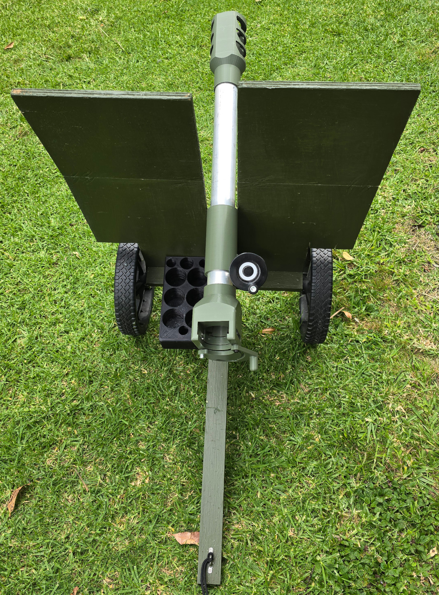
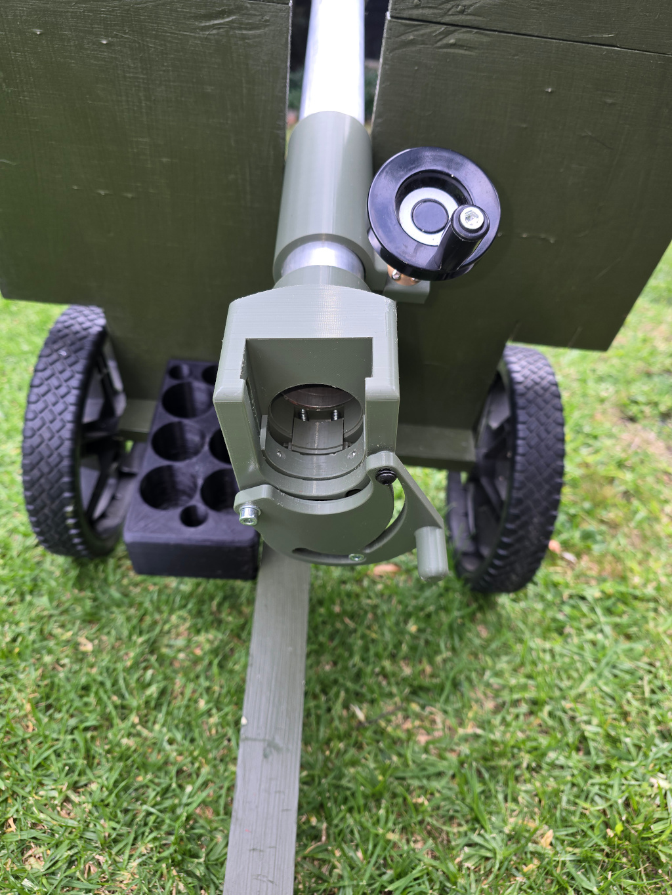
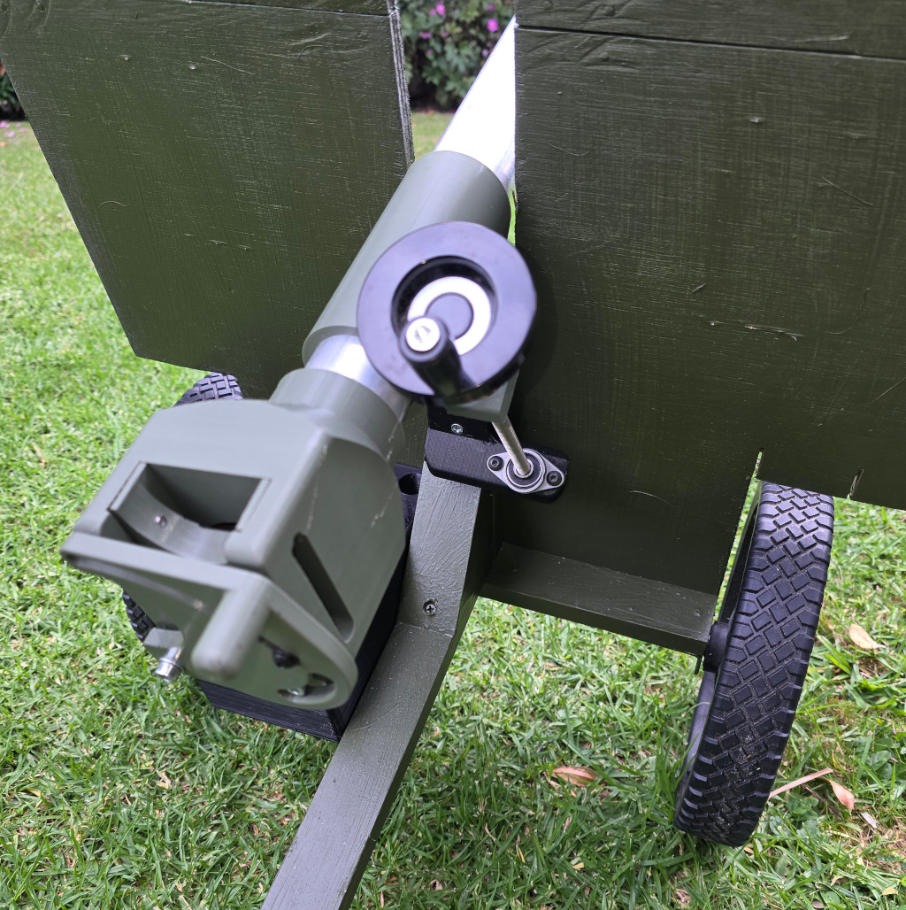

Q-Prop Creations
40mm Cannon
A tiny piece of field artilery, it chambers 40mm rounds through a sliding breach. With CO2 powered 40MAX shells, this cannon has a range of over 100m. The CO2 chargers are a source of much pain, proving unreliable even with a lot of maintenance.



